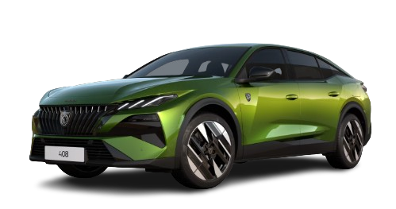
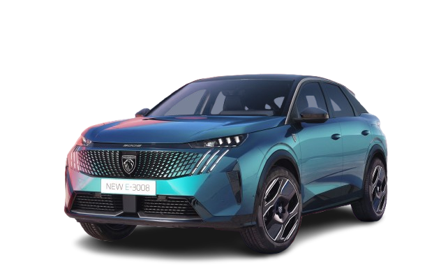
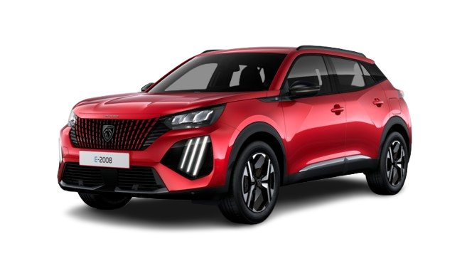

Voiture sportive
Voiture électrique

La Peugeot E‑408 est un fastback électrique conçu pour offrir un design moderne et une conduite fluide
Grâce à son moteur électrique de 156 ch,
elle propose des accélérations linéaires et une réponse immédiate
Cette configuration lui permet d’offrir une conduite silencieuse,
stable et confortable, tout en conservant une allure dynamique.
C’est l’un des modèles électriques les plus innovants de Peugeot,
combinant style, technologie et efficacité.
À partir de 43 949 € en neuf
ou
32 999 € en occasion

La Peugeot E‑3008 est un SUV électrique conçu pour offrir un design moderne et une conduite fluide
Grâce à son moteur électrique de 210 ch,
elle propose des accélérations souples et une réponse immédiate
Cette configuration lui permet d’offrir une conduite silencieuse,
stable et confortable, tout en conservant un comportement dynamique
C’est l’un des modèles électriques les plus avancés de Peugeot, combinant style, technologie et efficacité.
À partir de 41 949 € en neuf
ou
28 999 € en occasion

La Peugeot E‑2008 est un SUV électrique compact conçu pour offrir un style moderne et une conduite douce
Grâce à son moteur électrique de 136 ch,
propose des accélérations linéaires et une réponse immédiate
Cette configuration lui permet d’offrir une conduite silencieuse,
et agréable, tout en conservant un comportement dynamique en ville
C’est l’un des SUV électriques les plus polyvalents de Peugeot, combinant design, technologie et efficacité
À partir de 40 949 € en neuf
ou
25 999 € en occasion
.